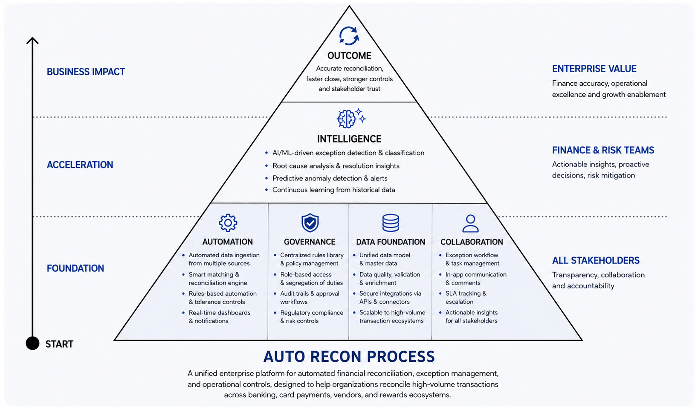
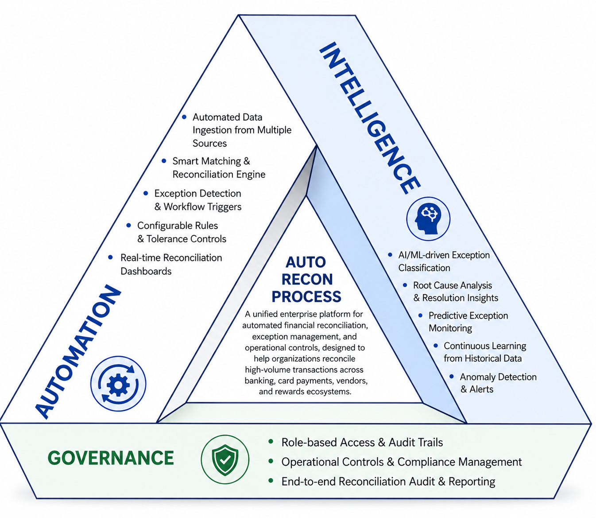
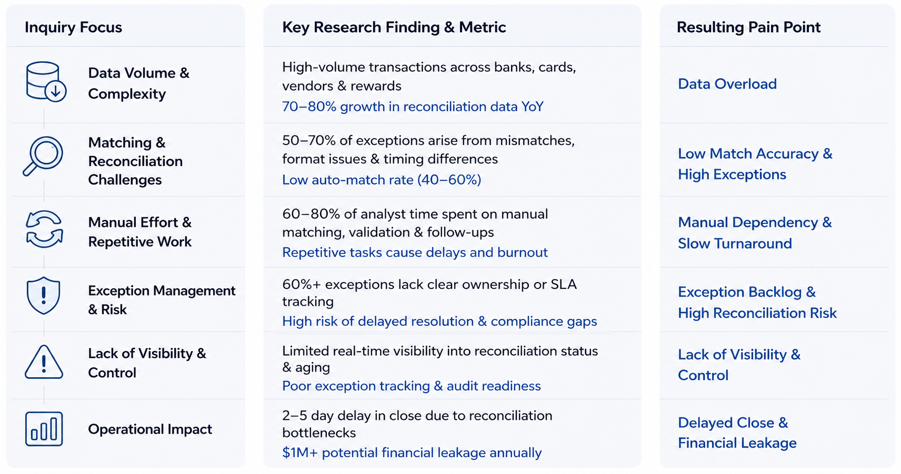
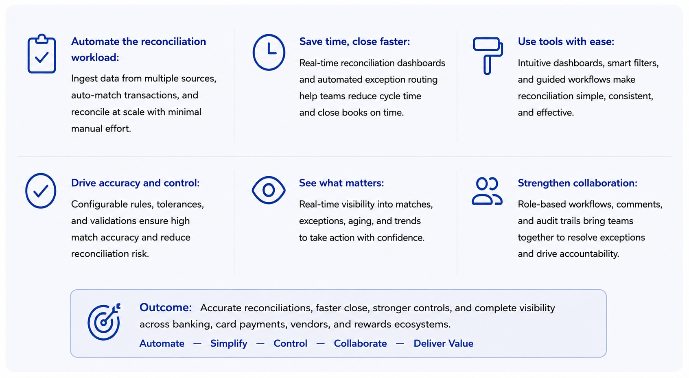
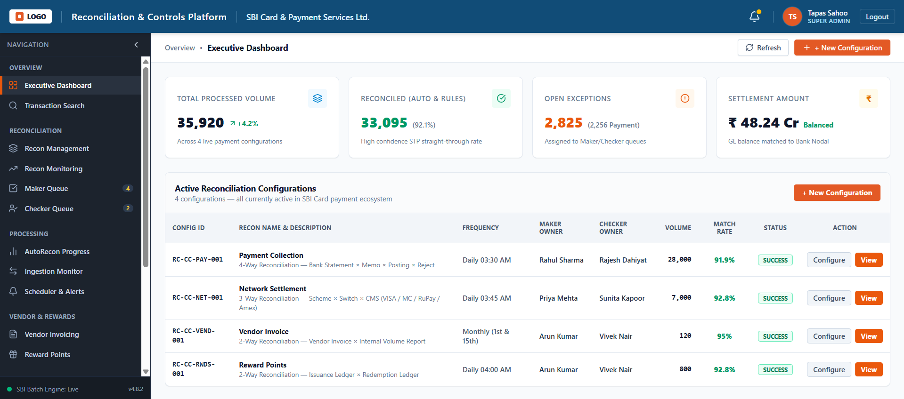
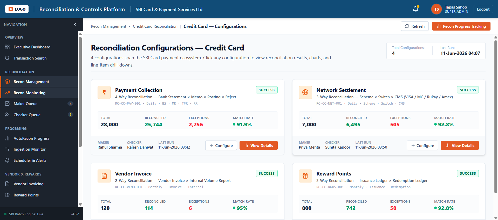
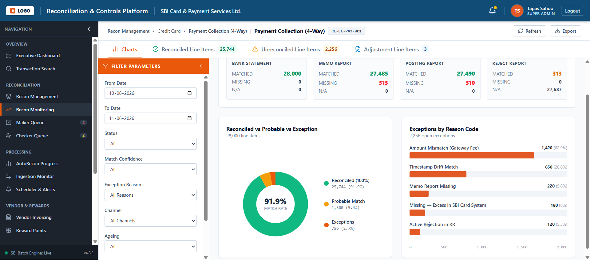
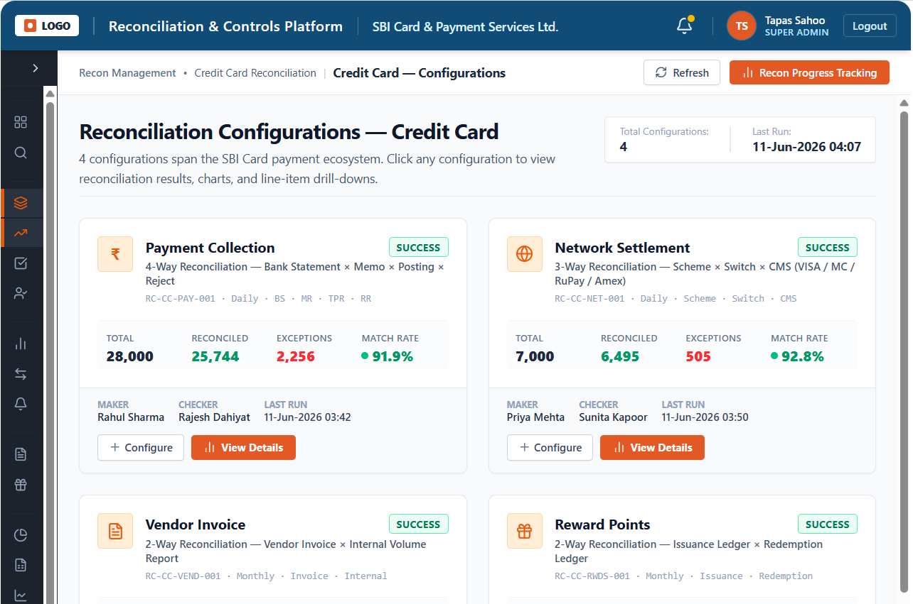
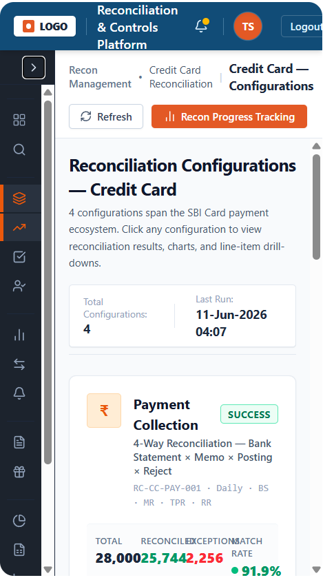
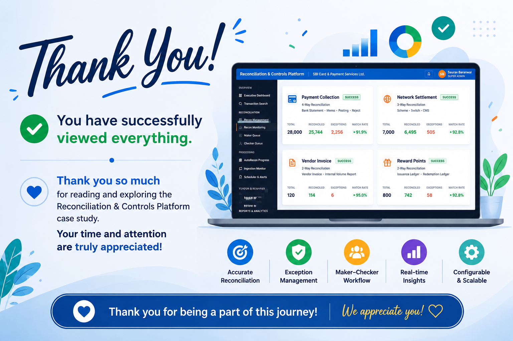

Project Overview
The Reconciliation & Controls Platform (RCP) centralizes reconciliation processes that are traditionally managed across multiple systems and spreadsheets. It automatically matches transactions from different data sources, highlights exceptions, provides workflow-based approvals, and delivers real-time operational insights.

Breaking Legacy Barriers
Business Vision
The Reconciliation & Controls Platform is an enterprise-grade solution that automates transaction matching. It is particularly suited for banking, credit card, payment processing, vendor finance, and loyalty reward operations — where accuracy, auditability, and operational efficiency are critical.

The Core Problems
Information overload
The landing page displays multiple KPIs, owner names, timestamps, and actions simultaneously — making it difficult to identify the most important item.
Overcrowded left navigation
Navigation becomes overwhelming, especially for first-time users.
Filter panel consumes workspace
The persistent filter panel occupies nearly one-third of the screen, reducing the space available for charts and analysis.
My Approach — Discovery Phase
Goal: understand users, understand business goals, build the empathy map. The research inquiry covered five key areas.
-
1
Workflow Mapping
Understood how finance and operations users complete reconciliation — from data ingestion through to exception closure — before designing the UI.
-
2
Tool Integration
Connecting the platform with external systems that generate financial transaction data, so reconciliation happens automatically instead of through manual uploads.
-
3
Cognitive Friction
Most users spend mental effort understanding what they're seeing and deciding what to do next. The recurring question: "Where should I look first?"
-
4
Error & Risk Analysis
Identified high-risk reconciliation failure points across data ingestion, transaction matching, and exception handling.
-
5
Pain Points, Goals & Behaviour
User-centered research to identify key pain points, define operational goals, and map user behavior across the reconciliation workflow.
Key Research Findings

Stakeholder Mapping
For the Reconciliation & Controls Platform, the end users are the teams responsible for monitoring, investigating, and approving financial transactions.
Primary end users
- Operations Analyst
Primary user — daily monitoring and investigation - Maker / Reconciliation Executive
Resolves and submits reconciliation entries - Checker / Finance Manager
Validates, approves, and ensures compliance - Super Admin
Configures rules, users, jobs, and integrations
Stakeholders (indirect users)
- Finance & Accounting teams
- Risk & Compliance teams
- Internal Audit
- Product & Operations leadership
End User Interview
Mr. Sankha B
Checker / Finance Manager
Senior Business Analyst
As an end user I operate alongside Analysts, Makers, and Checkers working in finance operations. They rely on the platform to monitor reconciliation status, resolve transaction exceptions, and approve financial records with accuracy and auditability.
About the role
Validates the Maker's changes, approves reconciliations, and ensures compliance before closure. Configures reconciliation rules, manages users, schedules jobs, and monitors system integrations.
How he works
- Configures reconciliation rules and validates the Maker's changes
- Manages users and approves reconciliations
- Ensures compliance before closure and schedules jobs
- Monitors system integrations
The Solutions
Introduced a priority-first dashboard with Critical Exceptions and Recent Runs at the top, informed by a card sorting exercise.
Made the left navigation collapsible with expandable sections.
Converted the filter panel into a slide-out drawer to maximize chart space.
The Impact
Faster monitoring
Users identify reconciliation health and critical exceptions at a glance instead of scanning multiple cards.
Quicker navigation
Simplified layout and improved information grouping reduce the clicks needed to reach detailed reconciliation views.
Reduced cognitive load
Clear visual hierarchy and prioritized KPIs make the interface easier to understand for operations teams.
Role: Ownership Beyond Design
Data & analytics ownership
A reconciliation product is data-heavy, so designers can influence how data is consumed.
- Decided which metrics deserve primary visibility
- Designed exception prioritization instead of showing all data equally
- Introduced progressive disclosure for detailed reports
- Impact: users spend less time interpreting data
Process improvement
Own the workflow, not only the interface.
- Conducted discussions with reconciliation analysts
- Mapped pain points across daily monitoring workflows
- Validated the redesign during UAT with business users
Owned the end-to-end redesign of the Recon Monitoring module — partnering with product managers, finance operations, and engineering to redefine KPI prioritization, streamline reconciliation workflows, standardize reusable components, and support implementation through developer handoff and UAT.
Core Business Data into Design
What Matters the Most
| Area | Benefit |
|---|---|
| Accuracy | Reduces manual reconciliation errors |
| Speed | Automates matching of thousands of transactions |
| Compliance | Complete audit trail and approval workflow |
| Visibility | Real-time reconciliation status and KPIs |
| Flexibility | Supports multiple reconciliation types and payment networks |
In one sentence: the platform's primary value is automating financial reconciliation while giving operations teams complete visibility, exception control, and audit-ready governance.

The Screens
20 screens across 3 views, built around the Auto Recon process.



Responsive views


Key Learnings
- In a data-heavy product, deciding what not to show matters as much as what to show. Prioritization is the design work.
- Enterprise redesigns succeed when functionality is preserved. Users trusted the change because nothing they relied on disappeared.
- Talking directly to reconciliation analysts surfaced friction that no analytics dashboard would have revealed.
- Validating in UAT with real business users caught assumptions early, before they became rework.
